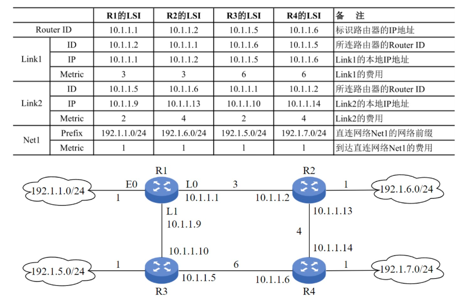

数据结构¶
代码题¶
2009统考真题¶
已知带头结点的单链表，节点结构为data和link，头指针为list。在不改变链表的前提下,设计高效算法查找倒数第k个节点（k为正整数），若成功则输出data并返回1，否则返回0。
要求：
- 描述算法的基本设计思想。
- 描述算法的详细实现步骤。
- 用C/C++/Java实现算法（需注释关键部分）。
2010统考真题¶
设将 \(n\)（\(n > 1\)）个整数存放到一维数组 \(R\) 中。设计一个在时间和空间两方面都尽可能高效的算法。将 \(R\) 中保存的序列循环左移 \(p\)（\(0 < p < n\)）个位置，即将 \(R\) 中的数据由 \((X_0, X_1, \cdots, X_{n - 1})\) 变换为 \((X_p, X_{p + 1}, \cdots, X_{n - 1}, X_0, X_1, \cdots, X_{p - 1})\)。
要求: 1. 给出算法的基本设计思想。 2. 根据设计思想，采用 C 或 C++ 或 Java 语言描述算法，关键之处给出注释。 3. 说明你所设计算法的时间复杂度和空间复杂度。
最暴力的办法, 创建一个长度为 \(n\) 的数组Array
第一步先将原数组的 \(0\sim p-1\) 对应的数,复制到Array中的 \(n-p\sim n-1\) 的位置上
再将原数组的 \(p\sim n-1\) 对应的数,复制到Array中的 \(0\sim n-p-1\) 的位置上
时间复杂度 \(O(N)\)
空间复杂度 \(O(N)\)
参考代码
优化 显然时间复杂度是不可能再降低了(在数量级上),由于至少要移动每个结点一次. 只能考虑空间复杂度的优化,显然是需要考虑一个原地操作(\(O(1)\))
考虑这一个例子 \((1,2,3,4,5), p=2\) 其结果应该是 \((3,4,5,1,2)\) 如果将 \((1,2)\) 和 \((3,4,5)\) 看成两部分,操作的结果应该是反转这两部分,这就提示了可以考虑反转数组(原地O(1)), 且如果此时这两部分为 \((2,1)\) \((5,4,3)\) 则只需进行一次整体反转即可,而那两块是块内反转
故,最终的算法思路为
- 反转前p=2个元素 \((2,1 , 3, 4, 5)\)
- 反转后n-p=3个元素 \((2, 1, 5, 4, 3)\)
- 再整体反转就得到结果 \((5, 4, 3, 2, 1)\)
测试连接 leetcode 轮转数组 leetcode上这道题是右移,且要注意边界处理.其余完全一样
参考实现
| C++ | |
|---|---|
2011统考真题¶
- 定义升序序列\(S\)的中位数：长度为\(L(L \geq 1)\)的升序序列\(S\)，第\(\left\lfloor \frac{L}{2} \right\rfloor\)个位置的数为中位数。
- 示例：\(S_1 = (11,13,15,17,19)\)的中位数为15；\(S_2 = (2,4,6,8,20)\)的中位数为8；\(S_1\)和\(S_2\)合并后的中位数为11。
- 问题：有两个等长升序序列\(A\)和\(B\)，设计高效算法找出它们的中位数。
要求：
1. 给出算法的基本设计思想。
2. 用C/C++/Java描述算法，关键处加注释。
3. 说明时间复杂度和空间复杂度。
暴力解法也很好想,合并两个序列(这一步就可以确定总数为偶数还是奇数),如果是奇数返回中间值;如果是偶数返回中间两数的平均数.
时间复杂度为 \(O(n)\) 空间复杂度 \(O(n)\) 其中n为序列长度
参考代码
| C++ | |
|---|---|
优化 这个优化是比较显然的,本质是一个查找问题,在加上数组是有序的很容易想到是二分.
时间复杂度是 \(O(log(n))\)
空间复杂度 \(O(1)\)
2012统考真题¶
题目：采用带头结点的单链表存储单词，共享相同后缀。如"loading"和"being"的存储映像如下图。设计高效算法找出str1和str2共同后缀的起始位置（如图中字符i所在节点）。
要求： 1. 给出算法的基本设计思想。 2. 用C/C++/Java实现算法（需注释关键部分）。 3. 说明算法时间复杂度。
2013统考真题¶
- 定义主元素：整数序列\(A = (a_0, a_1, \dots, a_{n-1})\)中，若存在\(x\)使得\(a_{p1} = a_{p2} = \dots = a_{pm} = x\)且\(m > n/2\)（\(0 \leq p_k < n\)），则\(x\)为主元素。
- 示例：
- \(A = (0,5,5,3,5,7,5,5)\)的主元素为5；
- \(A = (0,5,5,3,5,1,5,7)\)无主元素。
- 问题：设计高效算法找出主元素，存在则输出该元素，否则输出-1。
要求：
1. 给出算法基本设计思想。
2. 用C/C++/Java描述算法，关键处加注释。
3. 说明时间复杂度和空间复杂度。
参考代码
2014统考真题¶
题目：二叉树T（二叉链表存储），叶节点的weight为非负权值，求带权路径长度（WPL）之和。
要求：
- 给出算法的基本设计思想。
- 定义二叉树节点的数据类型（C/C++）。
- 实现算法并注释关键部分。
2015统考真题¶
题目：单链表节点结构为[data|link]（|data| ≤ n），删除所有绝对值相等的节点，仅保留第一次出现的节点。
示例：
- 输入：
head → 21 → -15 → -15 → -7 → 15 → NULL - 输出：
head → 21 → -15 → -7 → NULL
要求：
- 给出算法的基本设计思想。
- 定义单链表节点的数据类型（C/C++）。
- 实现算法并注释关键部分。
- 说明时间复杂度和空间复杂度。
2016统考真题¶
题目 已知由 \(n(n\geq 2)\) 个整数构成的集合 \(A=\{a_k\mid 0\leq k < n\}\), 将其划分为两个不相交的集合 \(A_1,A_2\) 元素个数分别为 \(n_1,n_2\), \(A_1,A_2\) 中的元素之和分别是 \(S_1, S_2\). 设计一个尽可能高效的划分算法,满足 \(\left|n_1-n_2\right|\) 最小且 \(\left|S_1-S_2\right|\) 最大.
要求
- 给出算法基本思路
- 根据设计思想,采用C/C++语言描述算法,关键之处给出注释.
- 说明你所设计算法的平均时间复杂度和空间复杂度.
2017统考真题¶
题目：将表达式树（二叉树）转换为等价的中缀表达式（通过括号反映计算次序）。
示例：
- 输入树1 → 输出：
(a + b) * (c * (-d)) - 输入树2 → 输出：
(a * b) + (-(c - d))
节点定义：
要求：
- 给出算法的基本设计思想。
- 实现算法并注释关键部分。
2018统考真题¶
- 问题：给定含\(n\)（\(n \geq 1\)）个整数的数组，设计高效算法找出未出现的最小正整数。
- 示例：
- \([-5,3,2,3]\)的最小未出现正整数为1；
- \([1,2,3]\)的最小未出现正整数为4。
要求：
- 给出算法基本设计思想。
- 用C/C++描述算法，关键处加注释。
- 说明时间复杂度和空间复杂度。
参考代码
2019统考真题¶
题目：带头结点的单链表L = (a1, a2, ..., an)，重新排列为L' = (a1, an, a2, an-1, a3, an-2, ...)，空间复杂度要求O(1)。
要求：
- 给出算法的基本设计思想。
- 用C/C++实现算法（需注释关键部分）。
- 说明时间复杂度。
2020统考真题¶
- 定义三元组距离：\(D = |a-b| + |b-c| + |c-a|\)，其中\(a,b,c\)为正数。
- 给定三个升序数组\(S_1, S_2, S_3\)，计算所有可能的三元组\((a \in S_1, b \in S_2, c \in S_3)\)的最小距离。
- 示例：
- \(S_1 = \{-1,0,9\}\)，\(S_2 = \{-25,-10,10,11\}\)，\(S_3 = \{2,9,17,30,41\}\)；
- 最小距离为2，对应三元组\((9,10,9)\)。
要求：
- 给出算法基本设计思想。
- 用C/C++描述算法，关键处加注释。
- 说明时间复杂度和空间复杂度。
参考代码
2021统考真题¶
题目：无向连通图G（邻接矩阵存储），当度为奇数的顶点数≤2时，存在包含所有边的EL路径（长度为|E|）。判断G是否存在EL路径。
| C | |
|---|---|
要求:
- 给出算法的基本设计思想。
- 实现算法并注释关键部分。
- 说明时间复杂度和空间复杂度。
2022统考真题¶
题目：非空二叉树T采用顺序存储（数组SqBiTNode[MAX_SIZE]，ElemNum为实际占用元素数），不存在的节点用-1表示。判断是否为二叉搜索树。
示例：
- T1:
[40, 25, 60, -1, 30, -1, 80, -1, -1, 27]（ElemNum=10） - T2:
[40, 50, 60, -1, 30, -1, -1, -1, -1, 35]（ElemNum=11）
要求：
- 给出算法的基本设计思想。
- 实现算法并注释关键部分。
2023统考真题¶
题目：有向图G（邻接矩阵存储），出度>入度的顶点称为K顶点。输出所有K顶点并返回个数。
数据结构：
| C | |
|---|---|
示例： - 顶点a和b为K顶点（出度>入度）。
要求：
- 给出算法的基本设计思想。
- 实现算法并注释关键部分。
2024年统考真题¶
2025年统考真题¶
应用题¶
特点 不需要写代码 只需要写出算法思路/解法分析.
2009年统考真题¶
带权图(权值非负,表示边连接的两顶点间的距离)的最短路径问题是找出从初始顶点到目标顶点之间的一条最短路径。假设从初始顶点到目标顶点之间存在路径,现有一种解决该问题的方法：
①设最短路径初始时仅包含初始顶点,令当前顶点 \(\mathrm{u}\) 为初始顶点；
②选择离 \(\mathrm{u}\) 最近且尚未在最短路径中的一个顶点 \(\mathrm{v}\) ,加入最短路径中,修改当前顶点 \(\mathrm{u} = \mathrm{v}\) ；
③重复步骤②,直到 \(\mathrm{u}\) 是目标顶点时为止。 请问上述方法能否求得最短路径？若该方法可行,请证明之；否则,请举例说明。
2010年统考真题¶
将关键字序列(7,8,30,11,18,9,14)散列存储到散列表中。散列表的存储空间是一个下标从 0 开始的一维数组,散列函数为 \(\mathrm{H}\left( \mathrm{{key}}\right) = \left( {\mathrm{{key}} \times 3}\right) {\;\operatorname{mod}\;7}\) 处理冲突采用线性探测再散列法,要求装填(载)因子为0.7.
- 请画出所构造的散列表。
- 分别计算等概率情况下查找成功和查找不成功的平均查找长度。
2011年统考真题¶
已知有6个定顶点(顶点编号0~5)的有向带权图G,其邻接矩阵A为上三角矩阵,按行为主序(行优先存储)在如下的一维数组中

- 写出图G的邻接矩阵A
- 画出有向带权图G
- 求G的关键路径,并计算该关键路径的长度
2012年统考真题¶
设有 6 个有序表 A、B、C、D、E、F,分别含有 10、35、40、50、60 和 200 个数据元素,各表中元素按 升序排列。要求通过 5 次两两合并,将 6 个表最终合并成 1 个升序表,并在最坏情况下比较的总次数达到 最小。请回答下列问题。
- 给出完整的合并过程,并求出最坏情况下比较的总次数。
- 根据你的合并过程,描述 \(\mathrm{N}\left( {\mathrm{N} \geq 2}\right)\) 个不等长升序表的合并策略,并说明理由。
2013年统考真题¶
设包含 4 个数据元素的集合: \(S = \left\{ {{}^{\prime }{do}{}^{\prime },{}^{\prime }{for}{}^{\prime },{}^{\prime }{repeat}{}^{\prime },{}^{\prime }}\right.\) while \(\left. {}^{\prime }\right\}\) 各元素的查找概率依次为 \({p}_{1} = {0.35}\) , \({p}_{2} = {0.15},{p}_{3} = {0.15},{p}_{4} = {0.35}\) 。将 \(\mathrm{S}\) 保存在一个长度为 4 的顺序表中,采用折半查找法,查找成功时的平均查找长度为 2.2 。
- 若采用顺序存储结构保存 \(\mathrm{S}\) ,且要求平均查找长度更短,则元素应如何排列？应使用何种查找方法？查找成功时的平均查找长度是多少?
- 若采用链式存储结构保存 \(\mathrm{S}\) ,且要求平均查找长度更短,则元素应如何排列？应使用何种查找方法？查找成功时的平均查找长度是多少?
2014年统考真题¶
某网络的路由器运行OSPF协议,下表是路由器R1维护的主要链路状态信息LS1,R1构造的网络拓扑结构如图是根据题下表及R1的接口名构造出来的网络拓扑

- 本题中的网络可抽象为数据结构中的那种逻辑结构?
- 针对表中的内容,设计合理的链式存储结构,以保存表中的链路状态信息(LSI).要求给出链式存储结构的数据类型定义,并还出对应表的链式存储结构示意图(示意图中可仅以ID表示结点)
- 按照Dijkstra算法的策略,依次给出R1到达子网192.1.x.x的最短路径及费用
2015年统考真题¶
已知包含5个结点的图G如下所示.
- 写出G的邻接矩阵A(行,列下标从0开始)
- 求 \(A^2\), 矩阵 \(A^2\) 中位于0行3列元素值的含义是啥?
- 若已知具有n个顶点的图的邻接矩阵B,则 \(B^m\) 中非零元素的含义是啥?
2016年统考真题¶
如果一颗非空k叉树T中每个非叶节点都有k个孩子,则称T为正则k叉树.回答下列问题并给出推导过程.
- 若T有m个非叶结点,则T中的叶结点有多少个?
- 若T的高度为h(单结点的树h=1),则T的结点数最多为多少?最少为多少?
2017年统考真题¶
使用Prim算法求带权连通图的最小代价生成树.回答下列问题.
- 对于下图G,从A开始求G的MST,依次给出按算法选出的边
- 图G的MST是唯一的吗?
- 对应任意带权连通图,满足啥条件的时候,其MST是唯一的?
2018年统考真题¶
2019年统考真题¶
设计一个队列,要求满足
- 初始时队列为空
- 入队时,运行增加队列占用空间
- 出队后,出队元素所占的空间可以重复使用,即整个队列所占用的空间只增不减
- 入队操作和出队操作的时间复杂度均保持在 \(O(1)\)
回答下面问题
- 该队列应该选择何种存储结构?
- 画出队列的初始状态,并给出判断队空和队满的条件.
- 画出第一个元素入队后的队列状态
- 给出入队操作和出队操作的基本过程
2020年统考真题¶
若任一个字符的编码都不是其他字符编码的前缀, 则称这种编码具有前缀特性。现有某字符集(字符个数≥2)的不等长编码,每个字符的编码均为二进制的 0、1 序列,最长为 L 位,且具有前缀特性。请回答下列问题:
- 哪种数据结构适宜保存上述具有前缀特性的不等长编码？
- 基于你所设计的数据结构,简述从 \(0/1\) 串到字符串的译码过程。
- 简述判定某字符集的不等长编码是否具有前缀特性的过程。
2021年统考真题¶
已知某排序算法如下
| C++ | |
|---|---|
- 若 int a[] = {25,-10,25,10,11,19}, b[6]; 则调用上述函数后数组b中的内容是?
- 若a中含有n个元素,则算法执行过程中,元素间的比较次数是多少?
- 该算法稳定吗?若是,说明理由,否则修改为稳定排序算法.
2022年统考真题¶
现有n(n>1000000)个数保存在一维数组M中,需找M中最小的10个数,回答下列问题
- 设计一个完成上述查找任务的算法,要求平均情况下比较次数尽可能少,简述算法思路(不需要算法实现)
- 说明你所设计的算法平均情况下的时间复杂度和空间复杂度.
2023年统考真题¶
对含有n个记录的文件进行外部排序,采用置换-选择排序生成初始归并短时需要使用一个工作区,工作区中能保存m个记录.
- 若文件中含有19个记录,其关键字分别为51,94,37,92,14,63,15,99,48,56,23,60,31,17,43,8,90,166,100,当m=4的时,可生成多少个归并端?各是啥?
- 对于任意的m,生成的第一个初始归并短的长度最大值和最小值分别是多少?
2024年统考真题¶
将关键字序列 20, 3, 11, 18, 9, 14, 7 依次存储到初始为空、长度为 11 的散列表 HT 中, 散列函 数 \(\mathrm{H}\left( \mathrm{{key}}\right) = \left( {\mathrm{{key}} \times 3}\right) \% {11}\) 。 \(\mathrm{H}\left( \mathrm{{key}}\right)\) 计算出的初始散列地址为 \({\mathrm{H}}_{0}\) ,发生冲突时探查地址序列是 \({\mathrm{H}}_{1},{\mathrm{H}}_{2},{\mathrm{H}}_{3},\cdots\) , 其中, \({\mathrm{H}}_{\mathrm{k}} = \left( {{\mathrm{H}}_{0} + {\mathrm{k}}^{2}}\right) \% {11},\mathrm{k} = 1,2,3,\cdots\) 。
- 画出所构造的 HT, 并计算 HT 的装填因子。
- 给出在 HT 中查找关键字 14 的关键字比较序列。
- 在 HT 中查找关键字 8 , 确认查找失败时的散列地址是多少?